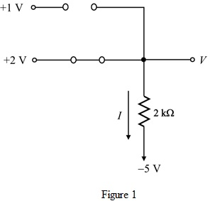
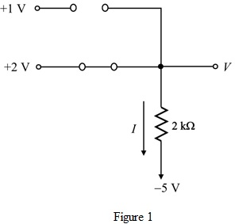
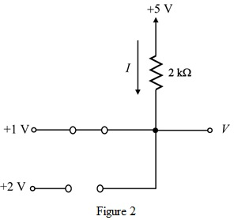

(a)
Refer to Figure P4.3 (a) in the text book.
The diode is cut off mode, whereas the diode  is in the conducting mode.
is in the conducting mode.
Replace the diode  with open circuit and the diode
with open circuit and the diode  with short circuit.
with short circuit.

(a)
Refer to Figure P4.3 (a) in the text book.
The diode is cut off mode, whereas the diode is in the conducting mode.
Replace the diode with open circuit and the diode with short circuit.

From Figure 1, the voltage  at the output terminal the voltage at the receiving end of the diode.
at the output terminal the voltage at the receiving end of the diode.
Therefore, the value of the voltage  is
is .
.
Calculate the value of the current passing through the resistance.
Substitute  for
for  .
.
Therefore, the value of the current is.
(b)
Refer to Figure P4.3 (a) in the text book.
The diode  is in conducting mode, whereas the diode
is in conducting mode, whereas the diode  is in the cut off mode.
is in the cut off mode.
Replace the diode with short circuit and the diode with open circuit.
with open circuit.
Draw the equivalent circuit.

From Figure 2, the output voltage V is the voltage at the receiving end of the diode.
Therefore, the value of the voltage  is
is .
.
Substitute  for .
for .
Therefore, the value of current is.